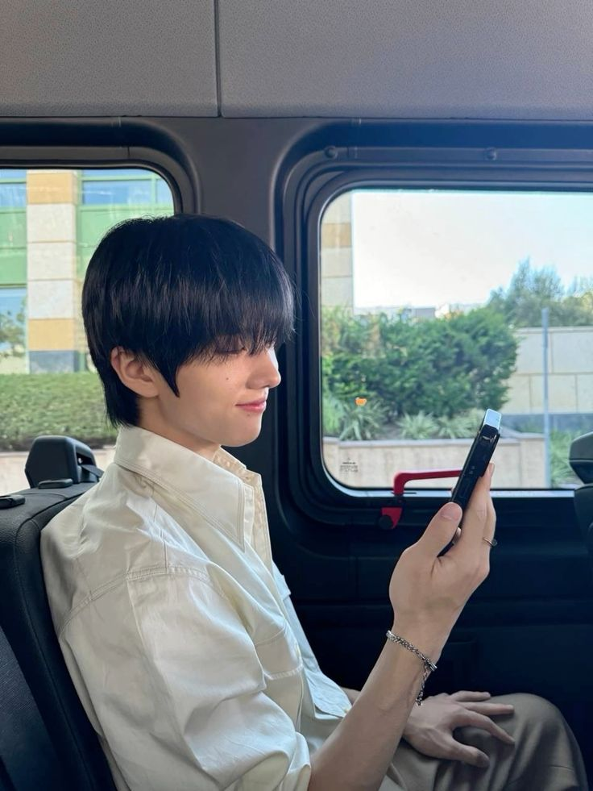

Multimedia
Logo qesign

gambar 1.0 logo qesign
Logo ini dibuat untuk foto profil Instagram Portofolio saya saat masih siswa SMK Taruna Bhakti Depok. Huruf 'q' sendiri diambil dari nama depan saya yaitu Qomariah, dan untuk 'esign' diambil dari kata design. Harapan saya, saya dapat membuat motion animasi dari logo yang telah saya buat.
Qomariah Syifa Fadillah

gambar 2.0 foto syifa
Berikut adalah foto saya yang sedang memakai baju dan kerudung berwarna coklat disertai latar belakang yang senada.
Park Jisung
gambar 3.0 foto jisung
Berikut adalah foto bias saya. Ya, saya mengakui bahwa ia bukanlah pacar saya. Namun, saya merupakan salah satu Asteroids(fans Park Jisung). Mengapa ia saya tampilkan pada web ini? Entahlah..